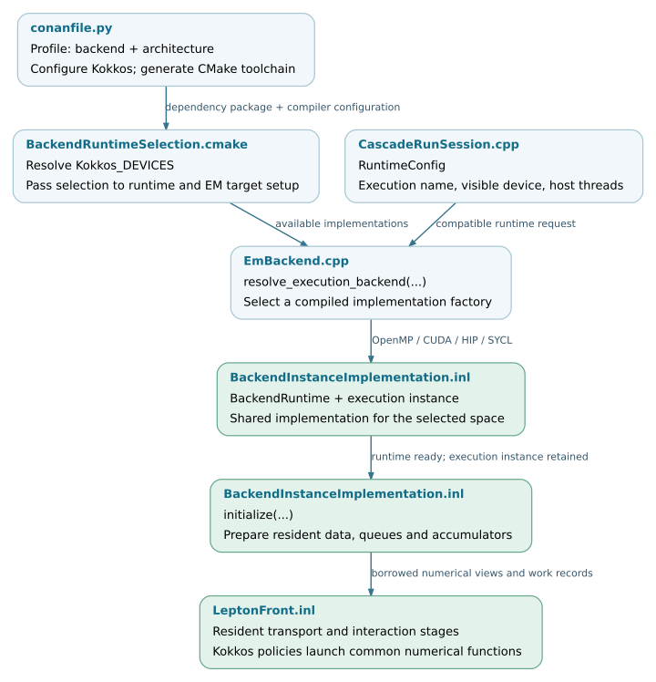

Build and backend portability
The Kokkos integration separates physical models, execution-space implementations and process coordination. A build supplies particular execution-space implementations; runtime options select compatible resources and application routes. Portability requires both device-callable numerical code and a valid memory, runtime and toolchain configuration.
Use Installation for installation commands and Parallel execution for running a configured application. This chapter explains the source-level contracts behind those commands.
Note
Source baseline: d5297c43. Build support, executable test coverage and validation on particular hardware are separate claims. The tables below describe implementation paths in this revision; they are not a certification matrix for devices or compiler versions.
Configuration layers
Layer |
Configuration |
Effect |
|---|---|---|
Physics and application route |
|
Select native or accelerated implementations of the requested calculations. Availability depends on compiled targets and application support. |
Compiled execution support |
Kokkos dependency options, architecture profile and
|
Determine which numerical implementations the library contains and which compiler generates them. |
Runtime resources |
|
Select a compatible execution implementation, visible device or host thread configuration. They cannot add a missing compiled backend. |
Process coordination |
Device list and |
Select direct execution or worker processes. Coordination distributes work across application processes; it is not a Kokkos execution space. |
Kernel and queue configuration |
|
Control launch geometry, storage and work submission within the selected implementation. |
Changing the EM backend is not equivalent to selecting CUDA or HIP: the same
kokkos-proposal numerical path can run with different compiled execution
spaces. Conversely, changing the execution space does not port a CPU-only
external physics library. CPU completion routes remain part of the hybrid
cascade. See Application integration and Photon transport and interaction completion.
Compiled implementation paths
The top-level build defaults to CORSIKA_ENABLE_KOKKOS=OFF. Enabling it adds
the generic runtime and numerical/data targets. The production
BackendRuntime and EM implementation are then selected from the dependency’s
Kokkos_DEVICES. Explicit requests incompatible with that dependency are
configuration errors. AUTO and NONE have different roles from turning
Kokkos off; Build configuration and toolchains documents the exact rules.
Build selection |
EM implementation |
Scope |
|---|---|---|
|
|
Kokkos kernels execute on CPU threads. |
|
|
Kokkos kernels execute on a selected NVIDIA device. |
|
|
Kokkos kernels execute on a selected HIP device with a matching architecture and ROCm/DTK toolchain. |
|
|
A source implementation is present. Its existence does not establish validation on a particular SYCL device or compiler. |
|
CUDA and OpenMP implementations plus a cooperative adapter |
Optional experimental combined build. Selection, shared runtime ownership and cooperation have additional contracts. |
These are instantiations of a shared implementation, rather than separate copies of all physics functions. For example, the HIP factory is:
11 std::unique_ptr<BackendInstance> make_hip_backend_instance(
12 RuntimeConfig const& config) {
13 return std::make_unique<BackendInstanceImplementation<Kokkos::HIP>>(config);
14 }
EmBackend resolves the requested execution mode and calls the corresponding
factory. BackendInstanceImplementation owns the execution instance,
resident tables, environment data, queues and accumulators. Its implementation
contains execution-space-specific branches for operations such as resource
queries, scans, waits and launch policies. A common template therefore does
not imply identical low-level instructions or synchronization on all devices.
See EmBackend.cpp, BackendApplicationTargets.cmake and
BackendInstanceImplementation.inl.
Runtime identity and reproducibility
RuntimeInfo records the selected backend, device, architecture, compiler,
Kokkos and driver/runtime versions, concurrency and memory information.
TuningCache associates launch parameters with runtime and build metadata.
These records help distinguish a change in the algorithm from a change in
its execution configuration. They do not replace the physical run conditions,
model/table identities, random-stream policy or event seed.
The public runtime classes have different ownership contracts. Generic
Runtime can manage or borrow the process Kokkos lifetime. Production
BackendRuntime owns initialization or uses an explicit cooperative lease.
Neither class can safely be recreated after its owned Kokkos runtime has
been finalized. Keep the appropriate owner alive across event reuse and
release device work and allocations before releasing that owner. The exact
rules, including external initialization and thread ownership, are in
Runtime selection and ownership.
Source organization
Build configuration selects and exports library targets. Public runtime
interfaces are under corsika/kokkos/runtime and their compiled
implementations are under src/kokkos/runtime. Application device parsing
is separate from runtime lifetime and from the EM implementation factories.
tools/ └── build_kokkos.sh prerequisites, profile selection and backend-specific build/install ./ └── conanfile.py dependency requirements and Kokkos options externals/conan/ └── profiles backend and architecture profiles cmake/ ├── BackendRuntimeSelection.cmake dependency-device combination to production runtime selection ├── BackendRuntimeTargets.cmake runtime libraries and device-compiler configuration ├── BackendApplicationTargets.cmake application support and EM backend factories └── corsikaConfig.cmake.in installed dependency and target discovery corsika/kokkos/runtime/ ├── Runtime.hpp generic Kokkos lifetime contract ├── BackendRuntime.hpp production runtime and cooperative lease interface ├── RuntimeConfig.hpp execution request and resource configuration ├── RuntimeInfo.hpp resolved runtime metadata └── TuningParameters.hpp launch and tile settings src/kokkos/runtime/ ├── Runtime.cpp generic ownership and configuration checks ├── BackendRuntime.cpp production initialization, metadata and probes ├── BackendSelection.cpp requested execution name to compiled implementation └── TuningCache.cpp configuration matching and cached tuning src/kokkos/application/ ├── DeviceSelection.cpp GPU discovery, selection and visibility mapping ├── DeviceCliOptions.cpp application option preparation └── BackendCli.cpp backend option parsing src/kokkos/em/ ├── EmBackend.cpp host facade and execution-space factory dispatch ├── HipBackendInstance.cpp HIP instantiation of the shared implementation ├── CudaBackendInstance.cpp CUDA instantiation of the shared implementation └── OpenMPBackendInstance.cpp OpenMP instantiation of the shared implementation corsika/detail/kokkos/em/execution/ └── BackendInstanceImplementation.inl resident EM implementation for the selected execution space
Validation coverage
Backend validation has several levels: command/configuration checks, process lifecycle, device primitives, numerical kernels and complete events. A host-only parser test cannot establish GPU visibility or device execution. Likewise, passing primitive tests does not establish complete-shower physics agreement.
Source or registration |
Existing coverage |
|---|---|
Installer commands, prerequisites and compiler/architecture selection using stub tools. No real GPU compilation or runtime execution. |
|
CUDA device-option parsing and visibility/argument contracts with controlled inputs. |
|
HIP device-list parsing, ordinal validation against synthetic listings, and help preserving visibility; not a hardware probe. |
|
Owned, shared and borrowed lifetimes; invalid/conflicting settings, thread ownership and finalization. Lifecycle scenarios are separate processes. |
|
Production owner, unavailable-backend and cooperative-lifetime contracts, plus primitive/queue/tiling probes for the selected execution space. |
|
Tuning-cache compatibility against the retained implementation. |
|
Bounded iteration and exact multi-column integer scans. |
|
Queue growth, source ordering and wavefront storage contracts. |
|
Execution-wait modes and, in CUDA builds, completion tickets and exceptional cleanup. |
|
Registers real-table backend stage/router and session tests when their targets and export fixtures are available. |
The existing CMake test registrations select the compiled backend and, where needed, compile test translation units with the device compiler. The pinned GitLab pipeline does not configure a Kokkos backend matrix. Test registration is therefore not evidence that every backend runs automatically in CI. See Device-code contracts and portability for the current boundary and requirements for extending coverage.
Build-to-execution flow
The build determines the available factories. At run time, the application
supplies a compatible RuntimeConfig; the selected implementation acquires
its runtime and initializes resident storage before submitting kernels. The
process coordinator, when selected, repeats this local setup within each GPU
worker rather than creating one cross-device Kokkos execution instance.


Build selection and runtime handoff for the standard EM backend. Open the
SVG for links to the checked source revision.
SVG ·
Editable DOT source.